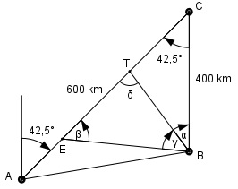

Aufgabe 212 Ein Flugzeug startet um 10.20 Uhr in A mit einem Kurs N 42,5° O, um das 600 km entfernte C um 11.50 Uhr zu erreichen. Um 10.36 Uhr startet vom 400 km südlich von C liegenden B aus ein Flugzeug, das sich mit dem ersten zum Weiterflug nach C treffen will. Welchen Kurs K muss das zweite fliegen, wenn es mit einer Geschwindigkeit von 450 km/h unterwegs ist? Zu welchem Zeitpunkt z treffen sie sich, und wie groß ist die Entfernung e dieses Treffpunktes von C?

Das erste Flugzeug F1 braucht für die 600 km von A nach C: Abfahrtszeit 10.20 Uhr Ankunftszeit: 11.50 Uhr Das sind 11.50 – 10.20 = 1 h 30 min = 1,5 h Somit ist seine Geschwindigkeit v1: s 600 km v1 = --- = ---------- = 400 km/h t 1,5 h = Geschwindigkeitsvektor AC Bis F2 startet, hat F1 den Weg s1 = AE zurückgelegt. Zeit t1 bis zum Start von F2: 10.36 Uhr – 10.20 Uhr = 16 Minuten = 16/60 h = = 0,267 h Somit beträgt die Strecke AE: s1 = v1 * t1 = 400 km/h * 0,267 h = 106,8 km Im Dreieck EBC: EC = 600 km – 106,8 km = 493,2 km Fall SWS: Cosinussatz: Winkel bei C = Winkel bei A (Z-Winkel) EB2 = 493,22 km2 + 4002 km2 - - 2 * 493,2 km * 400 km * cos 42,5° EB2 = 493,22 km2 + 4002 km2 - - 2 * 493,2 km * 400 km * 0,7373 EB2 = 112 337,2 km2 | √ EB = 335,2 km Wenn F2 gestartet ist, braucht F1 von E nach T so lange wie F2 von B nach T, nämlich t Stunden. F1 legt in dieser Zeit die Strecke ET = v1 * t = 400 km/h * t h zurück. F2 legt in dieser Zeit die Strecke BT = v2 * t = 450 km/h * t h zurück. Im Dreieck EBC: Sinussatz: ET BT ------- = ------- | *sin γ sin γ sin β BT * sin γ ET = -------------- | :BT sin β ET sin γ ----- = -------- BT sin β sin γ 400 km/h * t 8 ------- = ---------------- = ---- |*sin β sin β 450 km/h * t 9 8 sin γ = --- * sin β 9 Im Dreieck EBC: Fall SWS: Sinussatz: BC BE -------- = ----------- |*sin β sin β sin 42,5° BE * sin β BC = ------------- |*sin 42,5° sin 42,5° BC * sin 42,5° = BE * sin β | :BE BC * sin 42,5° sin β = ---------------- = BE 400 km * 0,6756 = ------------------- = 0,8062 --> β = 53,7° 335,2 km 8 sin γ = --- * sin β = 9 8 = --- * 0,8062 = 0,7166 --> γ = 45,8° 9 Kurs von F2 ermittelt man über den Winkel α: α = 180° - 42,5° - β – γ = 180° - 42,5° - 53,7° - 45,8° = 38° --> Kurs N 38° W δ = 180° - β – γ = 180° - 53,7° - 45,8° = 80,5° Im Dreieck ETB: ET EB ------- = ------- |*sin γ sin γ sin δ EB * sin γ 335,2 km * sin 45,8° ET = ------------ = ---------------------- = sin δ sin 80,5° 335,2 km * 0,7169 = ------------------- = 243,6 km 0,9863 TC = EC – ET = 493,2 km - 243,6 km = 249,6 km = e Für die 243,6 km von E nach T braucht F1: s 243,6 km t = --- = ---------- = 0,6 h = 0,6*60 min = 36min v 400 km/h F1 ist um 10.36 in E und um 10.36 Uhr + 36 min = 11.12 Uhr am Treffpunkt T.